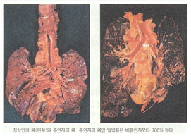

 |
- 세계보건기구(WHO)에서는 담배가 폐암을 비롯한 후두암, 구강암, 식도암, 신장암, 췌장암, 방광암 등 각종 암과 사망의 주요 원인이며, 심혈관질환, 만성호흡기질환 등 만성질환 뿐 아니라 임신과 출산의 위험을 증가시키는 건강 위험요인 중 하나라고 보고하였다.
- 담배의 유해성은 1960년대 초에 흡연이 건강에 영향을 미친다는 연구가 나오면서 시작되었다. 1960년대 들어서 담배의 건강상의 피해에 대한 논쟁이 계속되었고, 1964년 담배와 건강에 관한 일반 외과의사의 연구보고서(Surgeon General`s Report Smoking and Health)를 통해 담배가 해롭다는 사실을 재확인하였다.
- 흡연은 65세 이전 사망원인의 45%를 차지하고 있다. 담배 연기에 포함된 니코틴은 정신활성 물질의 한가지로 의존성이 코카인 같은 마약류와 비슷한 정도로 높다. 소화성 궤양, 골다공증, 피부주름, 태아 성장장애에도 흡연은 부정적인 영향을 가져온다.
- 국제암연구소(IARC, International Agency for Research Cancer) 보고서에 의하면 담배에는 확실한 발암물질(제 1군 발암물질)에 해당하는 벤젠(휘발유 성분), 비닐클로라이드(PVC원료), 비소(사약성분), 니켈 화합물(중금속), 크롬(중금속), 카드뮴(중금속), 폴로늄-210(방사성 물질) 등을 포함한 60여종 이상의 발암물질이 들어있고, 4,000여종의 화학물질이 포함되어 있다고 보고하고 있다.
- 국내 흡연율은 점차 줄어드는 추세이지만, 젊은 연령대에서 흡연율이 높으며, 시작 연령도도 다소 낮아지는 경향을 보이고 있다. 담배 유해물질에 대한 정보 공개를 활성화함으로써 대중에게 “흡연에 의한 위험성“을 적극적으로 전달하여 인식변화를 유도함으로써 흡연율 저하의 효과를 기대할 수 있다.
- 담배에 의한 유해성분 정보 전달을 통해 사회적으로 흡연의 위험에 대한 인식이 더 명확해질 수 있으며, 흡연에 의해 발생되는 여러 문제들을 방지함으로써 불필요한 논쟁을 줄일 수 있다.
- 흡연을 통해 발생되는 각종 질환을 예방함으로써 건강에 대한 사회적 부담이 다소 감소될 수 있으며, 쾌적하게 개선된 주변 환경으로 인한 다양한 신체 정신적인 긍정적 효과를 가져다 줄 것으로 기대한다.
|
|